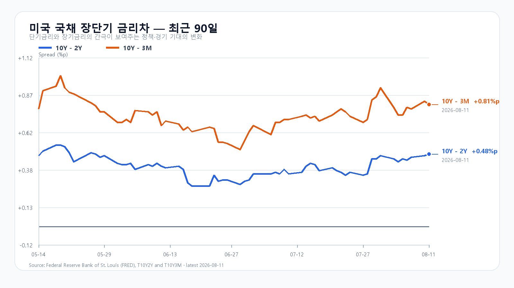
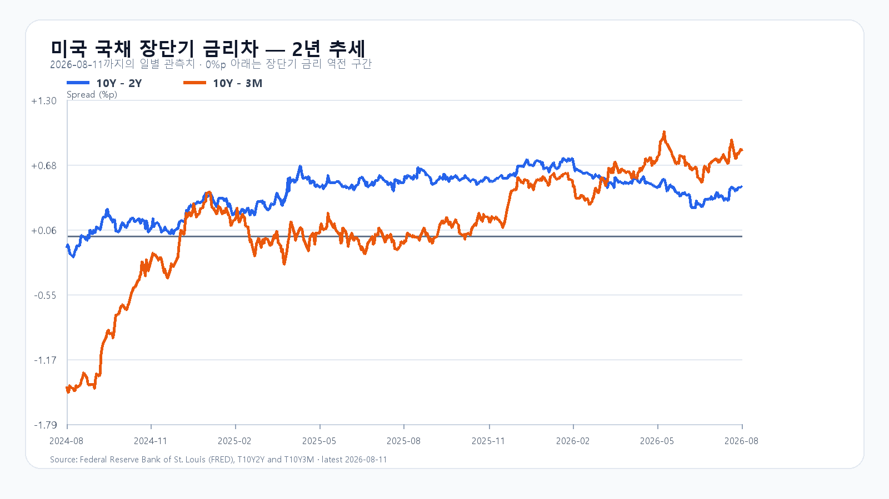

오늘의 한 문장
전일 국내 반도체와 수급, 장 마감 뒤 미국 AI 인프라 실적은 반등을 지지합니다. 다만 미국 지수 약세와 89달러 안팎의 브렌트유가 상단을 누릅니다. KOSPI가 6,300선을 지킨 뒤 6,405.81을 회복해야 전일 반등이 하루짜리 복원에서 이어지는 흐름으로 바뀝니다.
전일 반등은 삼성전자와 넓어진 시장 폭이 만들었다
KOSPI는 8월 11일 6,213.78까지 밀린 뒤 6,345.53으로 마감했습니다. 삼성전자가 4.13% 오른 239,500원으로 반등을 이끌었고 SK하이닉스는 1,425,000원으로 0.35% 상승했습니다. 상승 종목은 563개, 하락 종목은 309개였습니다.
외국인은 KOSPI 현물을 535억원, 기관은 212억원 순매수했습니다. 개인은 708억원 순매도했습니다. 프로그램 전체는 97억원 순매도로 거의 중립에 가까웠습니다. 오늘의 핵심은 전일 종가가 아니라 이 수급 조합의 연속성입니다. 삼성전자와 SK하이닉스가 전일 종가를 지키면서 프로그램이 순매수로 돌아서야 반등의 폭이 넓어집니다.
| 항목 | 확인값 | 오늘 기준 |
|---|---|---|
| KOSPI | 6,345.53 · +0.73% | 6,300 방어 · 6,405.81 회복 |
| KODEX 레버리지 | 92,580원 · +1.99% | 90,770원 방어 · 95,000원 돌파 |
| 외국인·기관 현물 | +535억원 · +212억원 | 동반 순매수 유지 |
| 프로그램 전체 | -97억원 | 순매수 전환 |
| 달러/원 | 1,413원대 | 1,420원 아래 유지 |
AI 인프라 실적이 정규장 약세를 뒤집었다
8월 11일 미국장에서 S&P500은 0.32%, Nasdaq은 0.60%, Dow는 0.34% 내렸습니다. 반도체는 반대 방향이었습니다. SOXX는 0.91%, SMH는 0.62% 올랐고 AMD는 1.01%, Micron은 0.87% 상승했습니다. Nvidia는 0.02% 내린 보합권, Broadcom은 1.50% 하락했습니다.
정규장 마감 뒤에는 수요 신호가 더 선명해졌습니다. Super Micro는 4분기 매출 111억달러와 총마진 17.5%, 2027회계연도 매출 가이던스 650억~720억달러를 공개했습니다. CoreWeave는 분기 매출 25억7,500만달러, 약 1,040억달러의 백로그와 3분기 초 250억달러가 넘는 신규 고객 약정을 제시했습니다. 08:05 KST 기준 시간외 주가는 각각 7.36%, 14.21% 올랐습니다.
Lumentum도 4분기 매출 10억630만달러와 다음 분기 매출 가이던스 12억2,500만~12억7,500만달러를 내놓은 뒤 시간외에서 2.06% 상승했습니다. 서버·AI 클라우드·광통신 수요가 동시에 확인된 셈입니다. 다만 CoreWeave는 순손실 6억2,600만달러와 순이자비용 6억4,000만달러를 기록했습니다. 수요가 강하다는 사실과 자본비용 부담이 크다는 사실을 함께 봐야 합니다.
EWY의 2.53% 상승은 전일 한국장 반등과 같은 방향으로 움직인 후행 신호입니다. 오늘 장의 추가 상승 여부는 NXT 프리마켓과 개장 뒤 외국인·프로그램 수급이 결정합니다.
Intel의 200억달러 증자가 만든 장비 기대
Intel이 월요일 제안한 150억달러 규모의 보통주 발행을 200억달러로 키웠다고 Axios가 보도했습니다. Intel의 SEC 예비문서는 조달 자금을 설비투자와 운전자금 등 일반 기업 목적에 쓸 수 있다고 밝혔습니다. 대규모 자금조달은 파운드리 투자를 이어갈 여력을 주지만 주주가치 희석도 동반합니다.
200억달러 최종 가격 공시는 아직 확인되지 않았습니다. Intel은 정규장에서 0.19% 오르는 데 그쳤고 장비주는 종목별로 엇갈렸습니다. 오늘 한국장에서 볼 것은 증자 헤드라인보다 AI 서버·클라우드 실적과 미국 반도체 상대강도가 삼성전자·SK하이닉스로 연결되는지입니다.
메모리 현물은 다시 올랐다
TrendForce의 8월 11일 공개치에서 DDR5 16Gb 4800/5600 현물 평균은 52.133달러로 0.71%, DDR4 16Gb 3200은 86.866달러로 0.14% 올랐습니다. 8월 3일 공개된 모듈 가격도 DDR5 16GB UDIMM 222.50달러, DDR5 32GB RDIMM 1,565달러로 각각 주간 3.49%, 1.29% 상승했습니다.
서버 수요가 PC DRAM 생산능력을 밀어내는 구조는 그대로입니다. 실물 가격은 삼성전자와 SK하이닉스의 중기 이익을 받치지만 주가의 하루 방향까지 대신 정하지는 않습니다. 오늘은 메모리 가격보다 외국인 현물·프로그램 수급이 더 빠른 확인값입니다.
유가가 내려오지 않으면 금리 하락도 제한된다
브렌트유는 88.91달러로 1.4% 올랐습니다. 호르무즈 해협의 물류 차질에 이어 홍해의 바브엘만데브 해협에서도 선박 공격이 발생했습니다. 미국 10년물은 4.70%로 2bp 내렸지만 유가가 높은 동안 성장주의 할인율 부담이 크게 풀리기는 어렵습니다.
미 재무부 8월 11일 확정치에서 3개월물은 3.89%, 2년물은 4.22%, 10년물은 4.70%였습니다. 10년-2년 금리차는 +0.48%포인트, 10년-3개월 금리차는 +0.81%포인트입니다. 달러/원은 07:50 KST 1,412.74원으로 1,420원 아래에 있습니다. 08:14 KST NXT 프리마켓에서 삼성전자는 241,500원(+0.84%), SK하이닉스는 1,451,000원(+1.82%)이었습니다.


오늘 밤 CPI가 다음 장의 금리 방향을 정한다
| 시각 | 이벤트 | 시장 예상 |
|---|---|---|
| 8월 12일 21:30 | 미국 7월 CPI | +0.1% MoM · +3.4% YoY |
| 8월 12일 21:30 | 미국 7월 근원 CPI | +0.2% MoM · +2.5% YoY |
| 8월 13일 21:30 | 미국 7월 PPI | +0.2% MoM · 근원 +0.3% |
| 8월 14일 21:30 | 미국 7월 소매판매 | +0.1% MoM |
근원 CPI가 전월 대비 0.2% 이하이고 헤드라인이 전년 대비 3.4% 이하라면 금리·달러 부담이 줄어듭니다. 근원이 0.3% 이상이면 유가 상승과 맞물려 물가 재가속이 부각됩니다. 오늘 한국장에서는 결과를 알 수 없으므로 CPI 발표 전 포지션 축소가 오후 상단을 누를 수 있습니다.
오늘의 시나리오와 확인 기준
반도체 상대강도와 전일 국내 수급이 6,300선을 받치지만 미국 지수 약세와 CPI 경계가 6,450선 안착을 막습니다.
삼성전자·SK하이닉스가 전일 종가를 지키고 외국인 현물과 프로그램이 함께 순매수해야 합니다.
6,300선을 이탈하고 외국인·프로그램이 동반 매도로 돌아서면 전일 저점 6,213.78 재시험이 열립니다.
KODEX 레버리지는 90,770원 방어, 92,580원 유지, 95,000원 돌파를 차례로 봅니다. 92,580원을 지켜도 KOSPI가 6,405.81을 회복하지 못하면 전일 반등의 연장보다 박스권 복원에 가깝습니다.
오늘 판단은 공격 30점 · 관망 55점 · 방어 15점입니다.
자료 기준
한국 시세와 수급은 Naver Finance, 미국 시장과 유가·금리 반응은 AP, AI 인프라 실적은 Super Micro·CoreWeave·Lumentum의 SEC 공시를 사용했습니다. Intel 증자는 Axios와 Intel SEC 예비문서, 경제 일정과 물가 지표는 미국 노동통계국 일정과 시장 컨센서스, 메모리 가격은 TrendForce, 국채 금리는 미 재무부 자료를 사용했습니다.